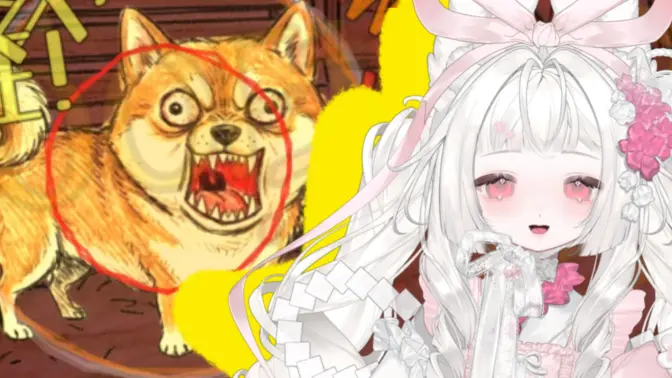

概览
栗妮亚_nini是活跃于哔哩哔哩的虚拟UP主与虚拟主播，主要发布翻唱、直播及原创角色叙事内容。其公开形象通常保留白发、兔耳与红瞳等识别特征，并在不同作品中使用多套Live2D与3D造型。主账号与相关录播账号共同保存直播回放、模型展示、切片与纪念内容，内容涵盖日常直播与“小兔宇宙”角色故事等不同方向。
“自由的灵魂永不困顿于荆棘。”
栗妮亚_nini · B站个人签名
账号数据记录于2026年7月22日，会随平台更新而变化。未见公开正式名称的造型采用“非官方暂称”，角色关系只陈述作品已明确的线索。
基本信息
创作与作品
栗妮亚的投稿以演唱、直播衍生内容、模型展示和原创角色叙事为主要组成部分。主页“合集和系列”页面共列出7项内容集合，既有持续更新的翻唱与回放，也有用于了解角色和创作路径的专题合集。
音乐投稿
“大栗兔的翻唱”收录62个视频，“无后期瞎唱”收录11个视频。歌曲选择与演唱投稿构成账号长期稳定的内容线。
原创叙事
OC角色PV、新衣回剧情，以及白兔、樱花小兔与弥赛亚等角色内容逐步补充“小兔宇宙”；相关设定仍处于持续展开阶段。
模型与视觉
“大栗兔的模型展示”收录10个视频，记录Live2D、红黑衣装及其3D版本等形象内容。
切片与回顾
“兔兔切片”等集合从直播中提取游戏、杂谈与纪念片段，和完整回放共同构成公开活动记录。
代表内容
直播活动
栗妮亚长期进行歌回、杂谈、游戏和日常陪伴直播，并由主账号与相关录播账号共同保存回放。截至2026年7月22日，主账号“直播回放”系列收录1068个视频、共36页，目前可见最早记录为2023年12月7日并延续至2026年7月；2023年9月至12月的早期直播记录可在“栗妮亚的录播号”查阅。公开回放中常见时长约2至5小时，是了解其直播风格与活动轨迹的主要公开来源。
“栗妮亚的录播号”（UID 3546381977389256）的“2023年度直播回放”合集收录104个视频；其中《【首播】2023-09-03 初次见面！我超紧张！》标题明确记录首次直播日期为2023年9月3日，回放投稿于次日发布。
演唱与学歌
歌回、选曲练习、学歌过程与无后期演唱。
杂谈与陪伴
早安回、日常聊天、工作或自习陪伴。
游戏实况
《奥日》《节奏天国》《纸嫁衣》《洛克王国》及互动游戏等。
纪念活动
百日、生日、周年、节日回与阶段性回顾。
连麦与活动
BW相关连麦、活动交流及与其他参与者的实时互动。
完整回放
长时录播保留现场语境，与短切片形成互补。
代表回放
经历
公开早期Live2D模型展示
发布目前主页可见的早期模型展示，展示了白发、兔耳与红瞳等核心识别特征。
首次直播
“栗妮亚的录播号”保存的《【首播】2023-09-03 初次见面！我超紧张！》明确记录首次直播日期；回放投稿于2023年9月4日。
发布自我介绍曲
以《小小世界》为原曲，由栗妮亚_nini填词并翻唱，用歌曲介绍主播身份与创作方向。
主账号回放系列与OC叙事展开
主账号“直播回放”系列目前可见最早记录为2023年12月7日，并延续至今；12月22日发布OC角色PV并负责配音、文案。9月至12月的更早回放可在“栗妮亚的录播号”2023年度合集中查阅。
红黑新衣预告与剧情片段
《兔星来信》预告新衣，《荆棘女巫》剧情片段记录相关新衣回内容。
发布一周年纪念专栏
以《栗妮亚一周年了，有很多话想说》回顾阶段经历。
完整展示红黑衣装
《嘘，枯萎玫瑰在无人处盛放》展示礼裙、玫瑰头饰、眼镜与配套UI。
白兔登场
发布标题明确写有“白兔登场”的生日回录播；该角色后来在《融化的第五个夏天》中再次出镜。
弥赛亚角色故事公开
投稿明确称“反派弥赛亚”，并在简介中使用“小兔宇宙构建中”。
红黑衣装的3D版本出镜
先后出现在《情兔节快乐》和《寄明月》MMD中，展示面部细节、全身轮廓与服装动态。
樱花小兔（暂称）确认出镜
《告死鸟》中出现白粉花枝兔耳角色形象，本文暂称“樱花小兔”；该角色随后继续出现在《凶狠吉娃娃》《天干物燥》等投稿中。
白兔在《融化的第五个夏天》中出镜
歌曲翻唱投稿使用白兔的白色角色形象；此前本文使用的“芭蕾兔”只是旧暂称，并非另一名角色。该套衣装未见公开正式名称。
角色与世界观
栗妮亚的部分投稿以“小兔宇宙”为持续构建中的叙事框架。现有公开材料尚未形成完整的角色谱系，以下记录可确认的角色形象、作品明确使用的角色名与关系线索；未公开正式名称的角色形象保留暂称，不对尚未说明的设定作补充推断。
栗妮亚
公开角色叙事的中心形象。在相关作品中，栗妮亚_nini除承担表演和配音外，也参与填词、文案、策划、脚本及剧情创作。
白兔
《【兔兔故事】生日回录播，白兔登场》明确使用“白兔”这一角色名；《融化的第五个夏天》中的白色角色形象也是白兔。此前本文使用的“芭蕾兔”只是对该画面的旧暂称，并非独立角色。白兔与栗妮亚、弥赛亚等角色的具体关系仍未见完整公开说明。
查看角色登场录播樱花小兔（暂称）
2026年5月4日《告死鸟》中出现的白粉花枝兔耳角色形象，随后继续出现在《凶狠吉娃娃》《天干物燥》等投稿中。现有投稿未公开正式角色名，“樱花小兔”是本文采用的识别称呼；本百科将其作为独立角色形象记录，而不是栗妮亚的一套普通换装，其与其他角色的具体关系尚未见完整公开说明。
查看《告死鸟》弥赛亚
“另一半的我”叙事中的反派角色
视觉形象
白银色长发、红眼与黑白高反差不对称礼服构成主体，黑蕾丝、玫红缎带、破镜与双人构图服务于“另一半的我”叙事。
叙事边界
“弥赛亚”已在本节以角色专题集中展示，后文的形象与衣装序列不再重复列出；这不表示角色不能拥有独立的视觉形象。
形象与衣装
以下按公开投稿中的出镜与模型展示整理形象变化。“初期形象”和“红黑衣装”是便于叙述的归纳称呼；“樱花小兔”是尚未见公开正式名称的角色形象暂称；“白兔”是作品已经明确使用的角色名，但其在《融化的第五个夏天》中所穿衣装仍未见公开正式名称。“荆棘女巫”作为剧情关联标题单独说明，不将其直接视为红黑衣装的官方名称。
初期形象
早期Live2D模型展示中的公开造型
这套造型展示了“白发兔耳”的核心特征：直立长兔耳、齐刘海与白色长发构成轮廓，酒红色蝴蝶结、荷叶边帽饰和胸前宝石把暖红色集中在头部与领口。
形象要点
长直白发、白色兔耳、酒红蝴蝶结、蕾丝边帽饰、红色眼睛与胸前宝石。整体偏古典洋装，色彩比后来的红黑造型更轻、更暖。
公开署名
原画：大大大大大柚子_；建模：canaette；视频：金色工贼。
红黑衣装
Live2D、剧情片段与3D版本连续出镜
2024年4月发布《兔星来信》新衣预告，5月剧情片段使用“荆棘女巫”标题，11月模型展示以“枯萎玫瑰”为标题，画面呈现玫瑰主题。公开标题没有把这些称呼统一声明为正式衣装名，因此本文以“红黑衣装”描述造型，以“荆棘女巫”说明关联叙事标题。
轮廓与材质
白金色长发配双侧发髻，黑色蕾丝帽檐和深红玫瑰构成视觉重心；黑灰礼裙叠加不对称裙摆、网纱手套、珍珠链与金属框眼镜，红色宝石和蝴蝶结贯穿耳饰、发饰与服装。
Live2D公开署名
原画：大大大大大柚子；建模：canaette；UI：阿咩ko；视频制作：餅餅Mochi。
红黑衣装的3D版本（关联标题：荆棘女巫）
两支3D投稿自身没有公开“荆棘女巫3D”这一正式模型名；它们展示的是红黑衣装的立体化版本。2026年2月14日《情兔节快乐》呈现面部与服装细节，2月19日《寄明月》MMD进一步给出全身动作画面。3D版保留圆框眼镜、玫瑰帽饰、长耳坠、网纱手套、红黑蝴蝶结和不对称礼裙等关键元素。
- 模型所属
- 栗妮亚_nini
- 模型制作
- 绝梦梦梦梦梦梦梦梦
- 转换与物理绑定
- FixEll
- 动作与镜头
- 甜茶（02.14）／Nivsha（02.19）
- 舞台
- 桜井（kotami cafe）／H2CU阿相
- 扇子
- 零戦P／Nivsha
樱花小兔
《告死鸟》中的白粉花枝角色形象
“樱花小兔”是本文为便于识别采用的非官方暂称。该角色形象于2026年5月4日在《告死鸟》翻唱中确认出镜，之后又出现在《凶狠吉娃娃》《天干物燥》等投稿中，并已在“角色与世界观”部分单独记录；现有投稿尚未公开其正式角色名或衣装名。
形象要点
白至淡粉色长发、粉红瞳；白色兔耳前叠着浅粉环形蝴蝶结，蕾丝花冠、深粉花簇、枝叶和身前花枝共同构成春日植物意象。
后续出镜
在《凶狠吉娃娃》和《天干物燥》等投稿中仍可见相近的白粉花枝造型，具体名称与设计署名暂未公开。

白兔
《融化的第五个夏天》中的白色角色形象
制作与合作
栗妮亚的模型、歌曲与角色作品由多位创作者共同完成。以下署名按具体作品整理，只表示该作品中的公开分工，不代表固定团队、长期合作关系或私人关系。
图集
图集按作品与形象收录公开封面、模型展示和动态画面。点击图片可跳转到对应B站投稿；项目中的原始图片文件均保留，画面版权归原作者及相关创作者所有。


参考资料
条目优先引用栗妮亚_nini本人账号、相关录播账号、合集页与原始投稿。外部页面可能登录后才能查看，标题和统计数字也可能随平台调整。
阅读与命名原则
- 优先采用本人账号、相关录播账号、合集页和原始投稿中明确出现的名称与分工。
- 角色名已经明确时优先使用角色名；未见公开正式名称的角色形象或衣装使用“非官方暂称”，并保留原始投稿标题。
- 角色关系只写作品明确的线索，不将视觉相似或标题修辞扩展为确定设定。
请尝试其他关键词。